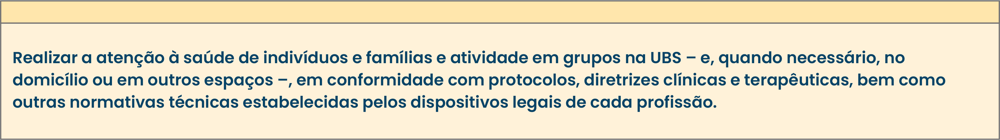

TÓPICO 01
ATUAÇÃO PROFISSIONAL NA ATENÇÃO PRIMÁRIA À SAÚDE
TÓPICO 01
ATUAÇÃO PROFISSIONAL NA ATENÇÃO PRIMÁRIA À SAÚDE
A atribuição específica a seguir se aplica a todos os profissionais da eSF e eSB envolvidos no cuidado:
Essa atribuição merece destaque por dialogar de forma ampliada com os pressupostos da APS, da ESF e com os princípios do SUS, no que tange à integralidade do cuidado, à atuação no território e ao atendimento às necessidades da população.